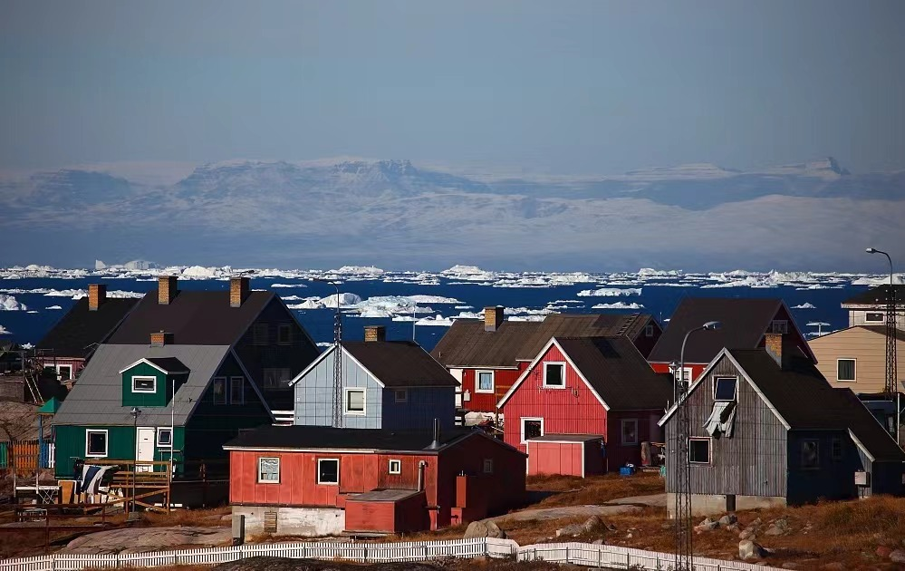
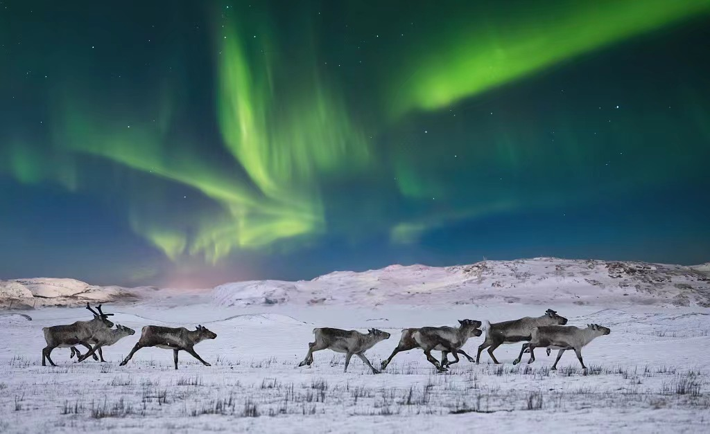
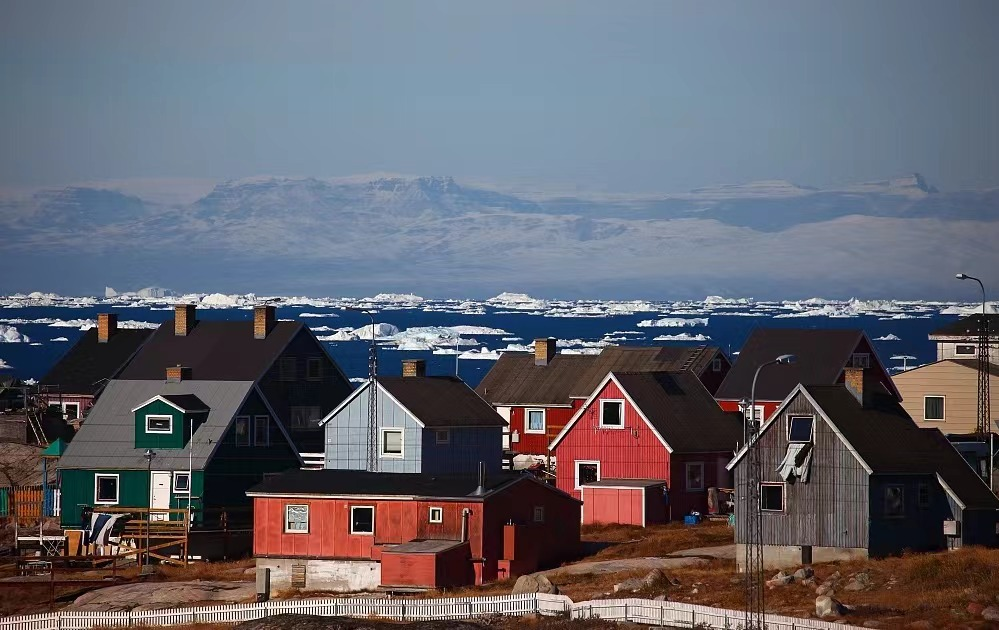
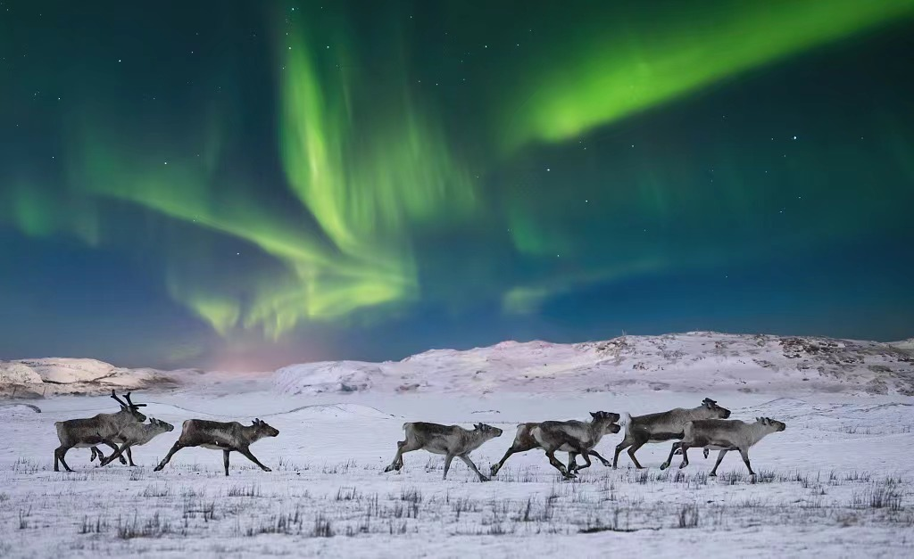
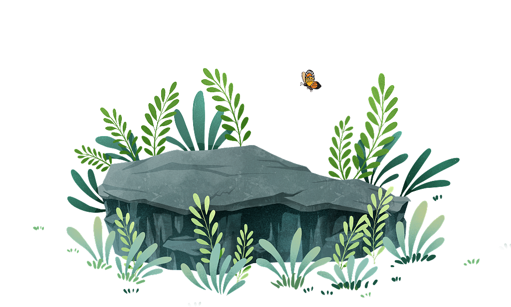

Home
Know
Feel
Love
Pslay
Home
Know
Feel
Love
Pslay
'认识自然'
Get to Know Nature
 



热带气候
全年高温：平均气温通常在25-30°C以上，比如亚马逊雨林的平均气温常年保持在27°C左右。
降水量大：年降水量通常超过2000毫米，像巴西的马瑙斯，年降水量就有2300毫米。这里的雨像是天上的喷水器，一年四季不间断。
生物多样性极高：热带雨林覆盖地球表面的6%，却拥有世界一半以上的物种。你可能在一平方公里的雨林里发现超过400种树木。
干旱气候
极端干旱：年降水量少于250毫米，有些地方如撒哈拉沙漠年降水量不足25毫米。下雨是如此罕见，当地人甚至会把第一次看雨的日子记下来。
昼夜温差大：白天温度可以达到40°C以上，而夜晚则可能降到0°C以下。在撒哈拉沙漠，你可能会在一天内经历夏天和冬天。
适应性强的生物：仙人掌能储存大量水分，而沙漠狐的耳朵可以帮助散热。
寒带气候
极端寒冷：冬季漫长且严寒，夏季短暂而凉爽。比如加拿大的黄刀镇，冬季气温可以低至-30°C，夏季约15°C。
降水少，多为雪：年降水量少，但大部分是雪。格陵兰岛的部分地区年降水量约为500毫米，几乎全是雪。
独特的生态系统：寒带地区有许多适应寒冷的动植物，如北极熊和苔藓。
极地气候
全年极端寒冷：温度几乎一直在冰点以下，比如南极洲，冬季气温可达-60°C。
极昼极夜现象：夏季有连续几个月的白天（极昼），冬季有连续几个月的黑夜（极夜）。在挪威的斯瓦尔巴群岛，你可以体验到这种奇妙的自然现象。
冰雪覆盖：大部分地面被冰雪覆盖，无植物生长。比如格陵兰岛的冰盖厚度可达3000米。
温带气候
四季分明：春夏秋冬，每个季节都有明显的特点。例如纽约，冬天雪花飘飘，夏天阳光灿烂。
温度适中：夏季温暖，冬季寒冷，但极端温度不多见。比如伦敦，夏天平均气温大约20°C，冬天约5°C。
多样的植被：温带地区植被多样，从落叶阔叶林到针叶林，都能找到。
'感受自然'
Feeling Nature
在英格兰谢菲尔德的森林中...
鸟类鸣叫频率为40-50次/分钟
树木平均密度为500-1000棵/公顷
土壤小动物平均密度达上万只/平方米
倾听风吟，看云卷云舒，心随自然共舞


'热爱自然'
Love Nature
踏入茂密的森林 树木参天 鸟语花香
阳光透过树叶的缝隙洒下斑斓的光辉
我感受到大自然的生机勃勃
一切都是那样的神秘而奇妙
我是大自然的孩子 与她共同舞动
在这片绿色的海洋里 我找到了永恒的宁静与安宁